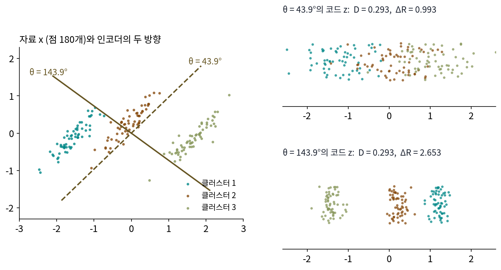

오토인코더와 클로즈드 루프: 되살린 것을 다시 압축하기
이 장의 물음
손실 압축(조금 다르게 되살리는 압축)을 하는 오토인코더는 학습 기록에 숫자 하나를 찍는다. 입력과 되살린 출력의 차이, 곧 재구성 손실이다. 그림 생성 모델의 압축기를 고를 때도 사람들은 먼저 이 숫자와 그 친척(PSNR 같은)을 본다. 그런데 디퓨전 모델을 다뤄 본 사람은 이상한 이야기를 들었을 것이다. 되살리기 점수가 더 좋은 압축기 위에서 학습한 생성 모델이 오히려 그림을 못 그렸다는 이야기다. 짧게 줄였다가 잘 되살렸으면 좋은 압축이 아닌가?
- 되살린 것이 원래 자료와 똑같이 가깝다면, 가운데의 짧은 코드도 똑같이 좋은 코드일까?
- 그림처럼 「얼마나 비슷한가」를 잴 잣대가 마땅치 않은 자료에서는 되살린 것이 잘 되살아났는지를 무엇으로 확인할까?
- 정답을 따로 주지 않고, 압축기가 자기 결과를 스스로 검사하게 할 수 있을까?
- 그 검사를 학습의 목표로 삼으면 압축기와 풀이기는 무엇을 두고 다투게 될까?
재구성 오차: 되살린 것을 원래 자료와만 비교하면
오토인코더는 자료를 짧은 코드로 줄이는 인코더와, 그 코드에서 자료를 되살리는 디코더를 이어 붙여 함께 학습하는 신경망이다. 학습은 입력과 되살린 출력의 제곱 오차를 줄인다. 압축의 말로 하면 인코더는 압축기, 디코더는 풀기 프로그램이고, 학습은 왜곡(되살린 것과 원래 것의 평균 차이, 이 장에서는 재구성 오차라 부른다)을 줄이는 손실 압축기를 자료에서 찾아내는 일이다. 그렇다면 왜곡이 같아서 되살린 결과가 똑같이 정확한 두 오토인코더는, 그 사이를 지나간 짧은 코드까지 똑같이 쓸모 있는 압축기일까?
역사: 가운데 층을 「코드」라 부른 논문
2006년 힌턴(Geoffrey Hinton)과 살라후트디노프(Ruslan Salakhutdinov)의 《사이언스》 논문 「신경망으로 자료의 차원 줄이기(Reducing the Dimensionality of Data with Neural Networks)」는 초록 첫 문장부터 압축의 말을 썼다. 가운데 층이 좁은 여러 층 신경망을 높은 차원의 입력을 되살리도록 학습시키면, 높은 차원의 자료를 「낮은 차원의 코드(low-dimensional codes)」로 바꿀 수 있다는 것이다. 깊은 신경망을 학습시키기 어려웠던 시절에 층을 하나씩 미리 학습시켜 출발점을 잡은 이야기는 디퓨전 책이 들려준다.
이 장에서 눈여겨볼 것은 그들이 결과를 보인 두 가지 방법인데, 하나는 재구성 오차였다. 같은 수의 숫자로 줄였을 때 깊은 오토인코더가 주성분 분석(자료가 가장 넓게 퍼진 방향으로 그림자를 내리는 방법)보다 원래 자료에 가깝게 되살렸다. 다른 하나는 코드 그 자체를 그린 지도였다. 가운데를 두 칸으로 줄인 신경망의 코드를 평면에 찍자, 숫자 종류마다 클러스터가 주성분 분석의 지도보다 또렷하게 갈라졌다. 재구성 오차는 되살린 것을 원래 것과 비교했고, 코드 지도는 되살리기 전의 코드를 보았다. 두 기준이 늘 같은 쪽을 가리킬까?
길쭉한 덩어리 셋을 수 하나로
두 기준을 떼어 보려고, 손으로 따라갈 수 있는 작은 예로 평면 위의 점 180개를 준비한다. 점들은 길쭉한 덩어리 셋을 이루고(덩어리마다 60개, 씨앗 0), 세 덩어리의 긴 축은 모두 45° 쪽으로 기울어 있다. 이 점들을 수 하나로 줄였다가 되살리는 가장 단순한 오토인코더를 생각한다. 인코더는 각도 θ 방향의 단위 벡터 u를 하나 골라, 점 x를 그 방향에 내린 그림자의 길이 z = uᵀx로 줄인다. 디코더는 수 z에 방향 v를 곱해 점 x̂ = vz로 되살린다. v는 그 인코더에 맞춰 재구성 오차가 가장 작아지게 고른다(최소제곱).
점들이 가장 길게 퍼진 방향(주축)은 3.9°이고, 인코더를 주축에 맞추면 재구성 오차 D가 0.184로 가장 작다. 이 장에서 보려는 것은 주축에서 같은 만큼 비켜 간 두 인코더다. 주축에서 40° 돌린 θ = 43.9°와, 반대로 40° 돌린 θ = 143.9°는 점들의 퍼짐을 주축에 대해 거울처럼 똑같이 잘라 내므로 재구성 오차도 0.293으로 똑같다. 되살린 것만 보면 두 오토인코더는 구별되지 않는다.
그런데 가운데의 코드 z를 직선 위에 찍어 보면 전혀 달라서, θ = 43.9°의 코드에서는 세 덩어리가 서로 겹친다. 덩어리마다 코드의 표준편차가 0.52~0.55로 넓은데 덩어리 평균은 −1.217, 0.130, 1.086으로 1 남짓씩만 떨어져 있다. 코드만 보고 가장 가까운 덩어리 평균으로 점을 나누면 77.8%만 제 덩어리로 간다. θ = 143.9°는 덩어리의 짧은 축 쪽으로 그림자를 내리므로 덩어리마다 표준편차가 0.13~0.15로 좁고, 180개가 모두 제 덩어리로 간다.

코드에서 덩어리가 갈렸는지 섞였는지를 비트로 재는 방법은 이미 있다. 같은 덩어리에서 나온 점들의 코드를 한 클러스터로 보자. 코딩 레이트 감소에서 본 것처럼, 점들을 허용 오차 ε 안에서 한꺼번에 적는 비트와 클러스터마다 따로 적는 비트의 차이 ΔR은 클러스터가 서로 멀리 떨어져 있을수록 크다. 이 장의 코드는 직선 위의 수 하나라서, 클러스터의 퍼짐을 클러스터의 가운데에서 잰 분산으로 적는다. 퍼짐이 σ²인 수를 ε 칸으로 적는 비트가 ½ log₂(1 + σ²/ε²)이다.
두 인코더의 ΔR은 θ = 43.9°에서 0.993비트, θ = 143.9°에서 2.653비트다. 재구성 오차는 같고 코드의 질은 두 배 반 넘게 다르다. 이렇게 되살린 x̂를 원래 자료 x와만 비교해 압축기를 재는 방식을 오픈 루프 (되살린 것을 원래 자료와만 비교하기, open loop)라 부르자. 인코더에서 디코더로 한 번 지나가고, 되살린 것이 인코더로 되돌아오지 않는다는 뜻이다. 오픈 루프는 자료 공간에서만 재므로, 코드 공간에서 일어난 일은 오픈 루프의 숫자에 잡히지 않는다.
ML에서: 되살리기를 잘하는 잠재와 쓰기 좋은 잠재
잠재 디퓨전 모델은 그림을 압축기의 잠재(오토인코더의 가운데 코드)로 줄인 뒤, 그 잠재 공간에서 그림을 만든다. 압축기는 보통 되살리기 손실로만 학습한다. 2025년에 나온 몇몇 연구는 잠재의 채널을 늘려 되살리기 점수는 올라가는데, 그 잠재 위에서 학습한 생성 모델은 오히려 나빠지는 일을 보고했고, 잠재를 그림의 뜻을 잘 담은 다른 인코더의 특징과 닮게 하는 손실을 더해 이 문제를 줄였다. 오픈 루프로만 학습한 압축기는 잠재를 어떤 모양으로 정리할지를 우연에 맡긴다는 것이, 재구성 오차가 같은 두 인코더(43.9°와 143.9°)의 코드가 전혀 달랐던 점 180개 장난감과 같은 구조다.
문제 1. 성적표에 점수 하나만 적는다면
세 반에서 두 명씩 뽑은 학생 여섯의 국어·수학 점수가 A반 (66, 68), (68, 66), B반 (66, 74), (74, 66), C반 (72, 74), (74, 72)이다. 성적표 칸이 하나뿐이라 수 하나로 줄여 적고, 나중에 적어 둔 수에서 두 점수를 되살린다. (가) 「두 점수의 평균」을 적고 국어·수학을 모두 그 평균으로 되살리면, 학생 하나의 제곱 오차(국어 오차² + 수학 오차²) 평균은 얼마인가? (나) 「(수학 − 국어)의 절반」 h를 적고 (70 − h, 70 + h)로 되살리면 어떤가? (다) 두 방법 가운데 성적표의 수만 보고 반을 맞힐 수 있는 방법은 어느 것인가?

(가)는 A반이 67, B반이 70, C반이 73이에요. A반 첫 학생은 (66 − 67)² + (68 − 67)² = 2, B반 학생은 4² + 4² = 32. 여섯 명 평균은 (2 + 2 + 32 + 32 + 2 + 2) ÷ 6 = 12예요.

(나)는 h가 1, −1, 4, −4, 1, −1이야. A반 첫 학생은 (69, 71)로 되살아나서 9 + 9 = 18, B반 학생은 (66, 74)가 그대로 나와서 0. 평균은 (18 × 4) ÷ 6 = 12. 어, 똑같네.

둘 다 12면 아무거나 써도 되겠네요. 성적표 칸이 하나라는 조건은 똑같이 지켰고요.

되살리기로는 비겼어요. 그럼 성적표만 받은 담임 선생님 입장에서 볼까요? 「1」이라고 적힌 성적표를 받으면 어느 반 학생인지 알 수 있나요?

h = 1은 A반 첫 학생도, C반 첫 학생도 1이에요. 모르겠네요. 평균으로 적으면 67, 70, 73이라서 반마다 수가 달라요.

되살린 점수의 오차는 같은데, 적어 둔 수에서는 평균은 반이 갈리고 차이의 절반은 섞여. 오차만 봐서는 성적표에 적힌 수가 쓸 만한지 알 수가 없어.

조별 과제 회의록을 둘이 똑같이 길게 받아 적었는데, 한 사람 건 누가 무슨 말을 했는지가 빠져 있는 거랑 비슷하네요. 다시 읽으면 내용은 다 되살아나는데 누가 맡았는지는 못 찾아요.
문제 2. 덩어리가 동그랗다면
본문의 점 180개에서 덩어리의 모양만 바꿔, 두 축의 표준편차를 모두 0.3으로 한 동그란 덩어리 셋을 만들었다(가운데 위치와 씨앗은 같다). 이 자료의 주축은 178.7°이다. 주축에서 ±40° 돌린 두 인코더 θ = 38.7°와 θ = 138.7°의 재구성 오차와 ΔR을 비교하라. 덩어리가 길쭉할 때와 무엇이 다른가?
스크립트로 돌려 보니까 재구성 오차는 둘 다 0.223이에요. ΔR은 1.796비트와 1.753비트, 가장 가까운 클러스터로 맞힌 비율은 97.2%와 96.7%예요. 이번엔 거의 같네요. 운이 좋았나 봐요.
씨앗을 1, 2, 3으로 바꿔 돌려도 두 ΔR의 차이는 많아야 0.1비트 남짓이에요(씨앗 2에서 0.101비트). 길쭉한 덩어리에서는 1.66비트나 벌어졌죠. 운이 아니라면 무엇 때문일까요? ΔR의 식에서 클러스터 하나의 코딩 레이트 R(Zⱼ)는 무엇으로 정해지나요?
그 클러스터 코드의 분산이요. 클러스터 하나를 그 방향으로 그림자 내렸을 때 얼마나 퍼지느냐요.
그럼 덩어리가 동그라면, 그림자를 내리는 방향을 돌릴 때 그 퍼짐은 어떻게 되나요?
길쭉하면 방향마다 달랐을 텐데… 동그라면 어느 방향으로 내려도 0.3² = 0.09 안팎으로 거의 같겠네요. 그러면 R(Zⱼ)는 θ에 따라 거의 바뀌지 않아요.

그럼 θ에 따라 크게 바뀌는 건 전체의 R(Z)뿐인데… 그건 점 전체의 분산이 그 방향으로 얼마냐로 정해지고, 재구성 오차도 그 분산으로 정해져요. 두 숫자가 같은 한 가지에 매여 있네요.

그래요. 덩어리가 동그라면 수 하나짜리 코드의 ΔR은 재구성 오차가 정해지면 거의 따라 정해져요. 재구성 오차가 같은데 ΔR이 갈린 것은 덩어리가 길쭉해서 방향마다 클러스터 안의 퍼짐이 달랐기 때문이에요.

그러니까 오픈 루프가 놓치는 건 「자료가 방향마다 다르게 생긴」 경우네요. 진짜 그림 자료는 동그란 덩어리일 리가 없으니까 놓칠 일이 많겠고요.

선형대수 시간에 이차형식은 고윳값이 다 같으면 어느 방향으로 재도 같은 값이 나온다고 배웠어. 동그란 덩어리가 그 경우였어.
문제 3. 재구성 손실이 가장 낮은 인코더를 고르면
본문의 점 180개로 수 하나짜리 오토인코더를 여러 각도로 만들었다. 같은 자료로 잰 재구성 손실이 가장 낮은 인코더는 θ = 4°(재구성 오차 0.184)였고, θ = 140°는 0.325였다. 이 코드를 받아 클러스터를 가르는 분류기를 붙이려 한다. 어느 인코더를 고르겠는가? 두 각도의 ΔR과 가장 가까운 클러스터 평균으로 맞힌 비율을 위젯 1의 「4°」「140°」 단추로 확인하고 답하라.
손실이 낮은 걸 고르죠. 0.184가 0.325보다 훨씬 낮잖아요. 하이퍼파라미터 고를 때도 손실 제일 낮은 걸로 하고요.
위젯에서 두 단추를 눌러 볼까요?
4°는 ΔR 1.706비트에 맞힘 96.7%, 140°는 ΔR 2.682비트에 맞힘 100%예요. 손실은 4°가 낮은데 분류에는 140°가 나아요.
4°는 주축이라 퍼짐을 제일 많이 남기니까 재구성이 잘 되는 거야. 그건 알겠는데, 그 퍼짐 안에 뭐가 들어 있는지가 문제겠네.
덩어리 하나만 놓고 볼까요? 주축 쪽 그림자에 그 덩어리 안의 퍼짐은 얼마나 남을까요?
덩어리가 길쭉하게 기울어 있으니까… 주축 쪽 그림자에는 덩어리 안의 퍼짐도 같이 많이 남아요. 140°는 덩어리의 짧은 축 쪽이라 덩어리끼리의 거리는 남기고 덩어리 안의 퍼짐은 버린 거고요.
재구성 손실은 「무엇을 남겼나」만 세고, 남긴 것이 무엇에 쓰이는지는 묻지 않아요. 분류기에게 넘길 코드라면 어떤 숫자로 골라야 할까요?

코드 공간에서 잰 숫자로요. 클러스터가 갈리는지를 재는 ΔR 같은 거요. 그런데 ΔR을 재려면 클러스터 라벨이 있어야 하잖아요. 라벨이 없으면 어떻게 해요?
시험 점수로만 조교를 뽑았는데 막상 질문에는 대답을 못 하는 조교가 걸리는 거네요. 뽑는 기준이 하는 일과 맞아야 해요.